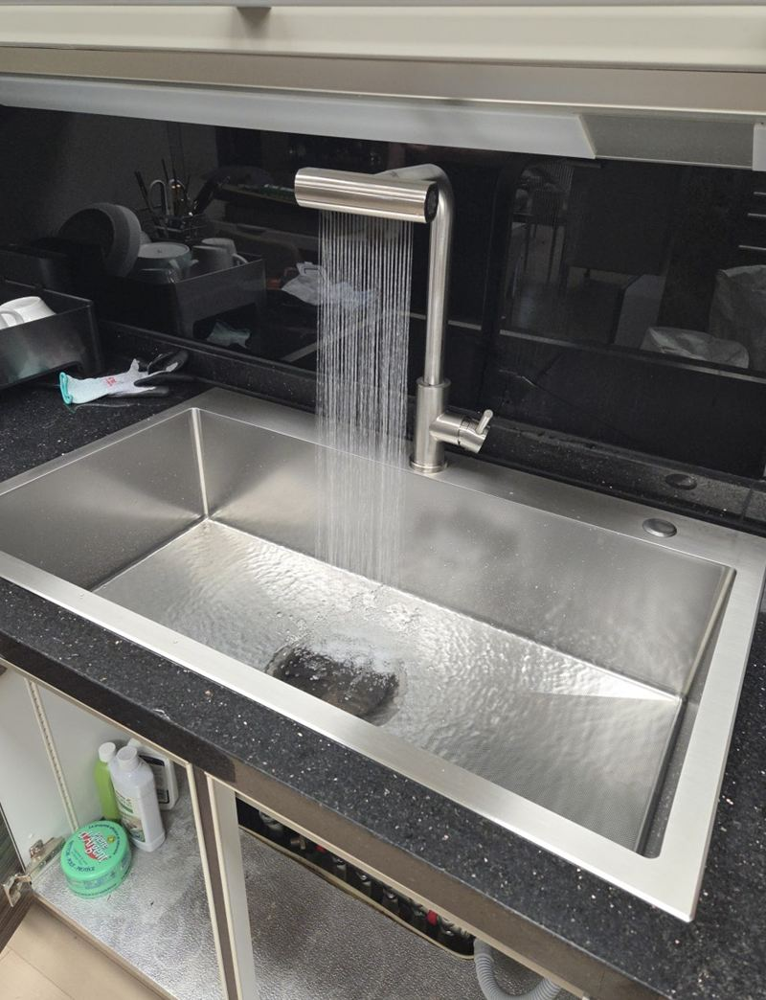
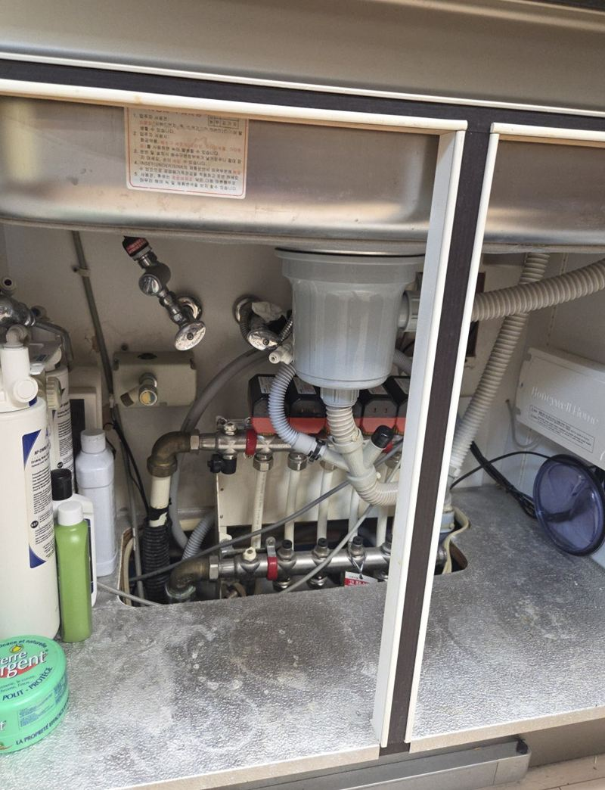
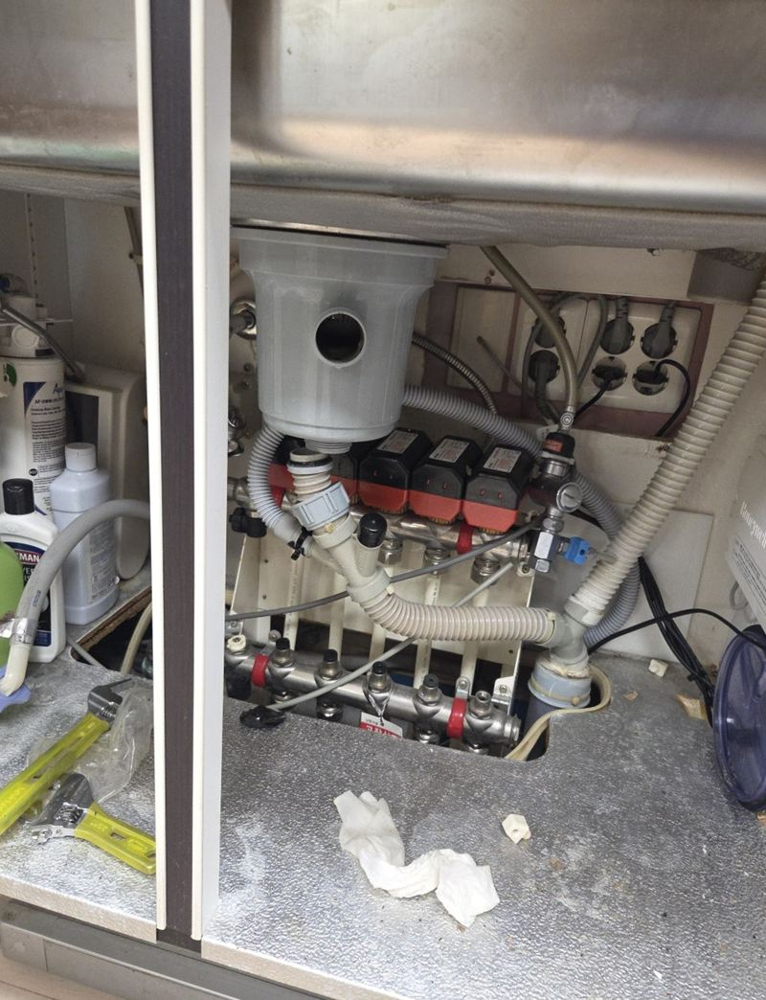
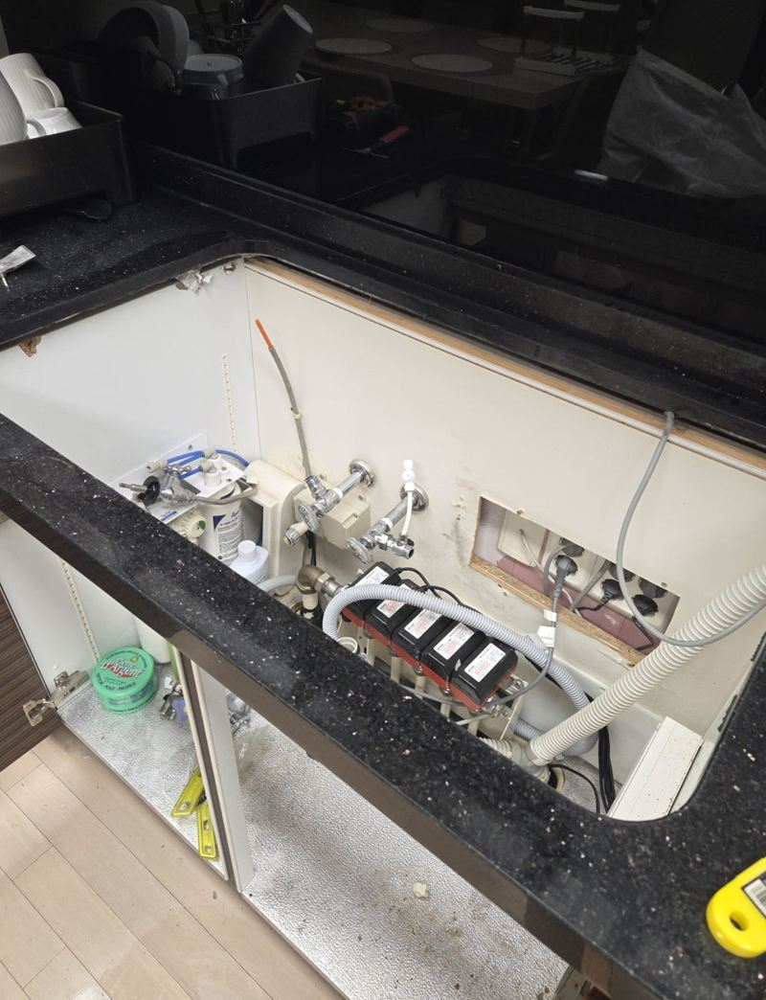
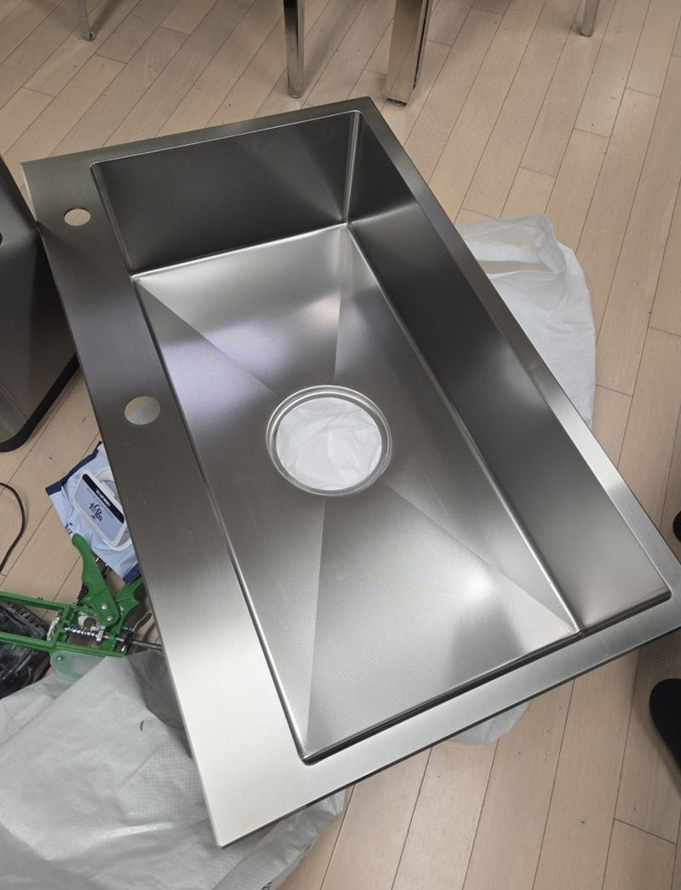
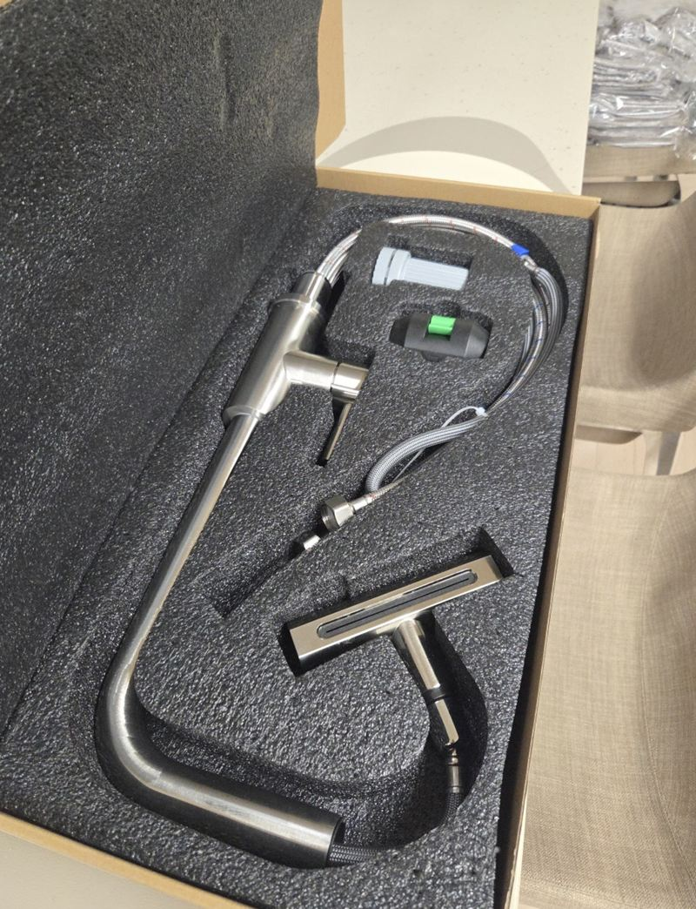
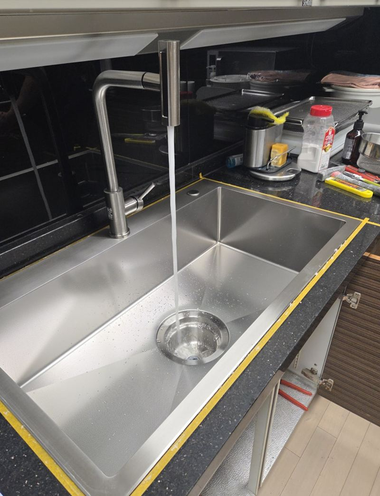

종로 주방 스텐 사각 싱크볼 교체 비용

 교체 전교체 후
교체 전교체 후← 밀어서 전후 비교 →
이사 온 집 주방에서 가장 먼저 눈에 걸리는 게 낡은 싱크볼이었다는 고객님이세요. "주방만큼은 새것처럼 쓰고 싶다"며 미리 사 두신 스텐 사각볼을 보여 주셨어요. 볼 둘레 틈에 때가 끼는 게 싫어서, 상판 아래에 붙는 언더 타입으로 바꾸고 싶어 하셨어요.
| 현장 | 서울 종로 사직동 아파트 주방 |
|---|---|
| 요청 | 고객 준비 스텐 사각볼, 인셋 → 언더 타입 변경 |
| 변수 | 기존 볼이 커서 상판 안쪽 찬넬에 걸려 그냥 빠지지 않음 |
| 한 일 | 절단 병행 철거 → 하부 공간 확인 → 언더볼 고정 → 수전·배수 연결 → 실리콘 |
직접 사 오신 싱크볼, 먼저 맞는지 봤어요
제품을 따로 사 오시는 경우 가장 먼저 확인하는 건 상판 구멍과 하부장 안 공간이에요. 언더 타입은 상판 아래에 볼을 매달아 붙이는 방식이라, 볼 테두리가 하부장 안쪽 구조와 부딪히지 않는지까지 봐야 해요.


안 빠지는 싱크볼, 잘라서 꺼냈어요
보통은 실리콘을 걷고 브라켓 나사를 풀면 볼이 빠져요. 그런데 이 집 볼은 크기가 커서 상판 안쪽 찬넬에 걸려 있었어요. 억지로 당기면 인조대리석 상판이 깨지거나 들떠서, 절단 위치를 먼저 계산한 뒤 그라인더로 볼을 잘라 가며 조금씩 빼냈어요.

언더 사각볼 달기
상판 아래에 새 볼을 맞춰 브라켓으로 단단히 고정하고, 상판과 볼이 만나는 선을 실리콘으로 촘촘히 막았어요. 이어서 수전과 배수를 연결하고 물을 받아 빼며 새는 곳과 배수 속도를 확인했어요.



| 인셋(올림형) | 언더형 | |
|---|---|---|
| 모양 | 볼 테두리가 상판 위로 올라옴 | 상판 아래에 붙어 테두리가 안 보임 |
| 청소 | 테두리 턱에 물때가 낄 수 있음 | 행주로 상판 물을 바로 쓸어 넣기 쉬움 |
| 시공 | 비교적 간단 | 하부 고정과 실리콘이 더 꼼꼼해야 함 |
싱크볼, 이럴 때 바꾸기 좋아요
- 이사 직후, 짐 넣기 전하부장이 비어 있어 작업이 빠르고 깔끔해요.
- 스크래치와 물때가 안 지워져요볼만 바꿔도 주방 인상이 확 달라져요.
- 볼 둘레 실리콘이 자꾸 까매져요언더형으로 바꾸면 틈이 덜 보여요.
직접 산 싱크볼, 설치 전에 확인해 주세요
- 상판 구멍보다 볼이 큰가요볼이 크면 상판을 넓히거나 하부장 안쪽 구조를 손봐야 할 수 있어요.
- 언더용인지 인셋용인지같은 사각볼이라도 붙이는 방식이 달라요. 제품 상세 설명을 보내 주세요.
- 배수구 부속이 같이 왔는지배수구와 바스켓이 빠져 있으면 따로 준비해야 해요.
- 수전 구멍 위치볼 크기가 바뀌면 수전 자리가 맞지 않을 수 있어요.
싱크볼 교체 질문
어떤 싱크볼을 사야 할지 모르겠어요
상판 구멍 크기와 하부장 폭을 재서 알려주시면 들어갈 수 있는 볼 크기를 먼저 말씀드려요.
절단 철거하면 비용이 더 드나요?
볼이 걸려 있으면 절단과 정리 시간이 더 들어요. 사진만으로는 알기 어려워 현장에서 확인하고 안내해요.
상판이 인조대리석인데 괜찮나요?
무리한 힘을 주지 않도록 절단 위치를 정해 작업해요. 원래 금이 있던 상판은 미리 말씀드려요.
수전도 직접 산 걸로 달 수 있나요?
네, 수전과 배수 부속도 준비하신 제품으로 연결해요. 연결 규격만 미리 확인해요.
언더볼은 무거운 냄비를 넣어도 괜찮나요?
브라켓으로 상판에 단단히 고정해서 일상 사용에는 문제없어요.
언더볼로 바꾸면 상판을 새로 해야 하나요?
인셋 구멍을 언더용으로 쓰려면 구멍 둘레 마감이 맞아야 해요. 상판 상태를 보고 가능한 방법을 말씀드려요.
볼 아래 배수구 냄새도 해결되나요?
배수구와 트랩을 새로 달면 냄새가 줄어드는 경우가 많아요.
설치 후 실리콘은 언제 다시 해야 하나요?
까맣게 변하거나 떨어지면 다시 쏘는 게 좋아요. 그 전에 틈으로 물이 들어가지 않게 살펴 주세요.
다른 싱크볼·수전 현장
지금 싱크볼 사진과 새로 달 볼 제품 정보를 보내 주세요.
전화 상담 010-4517-9872